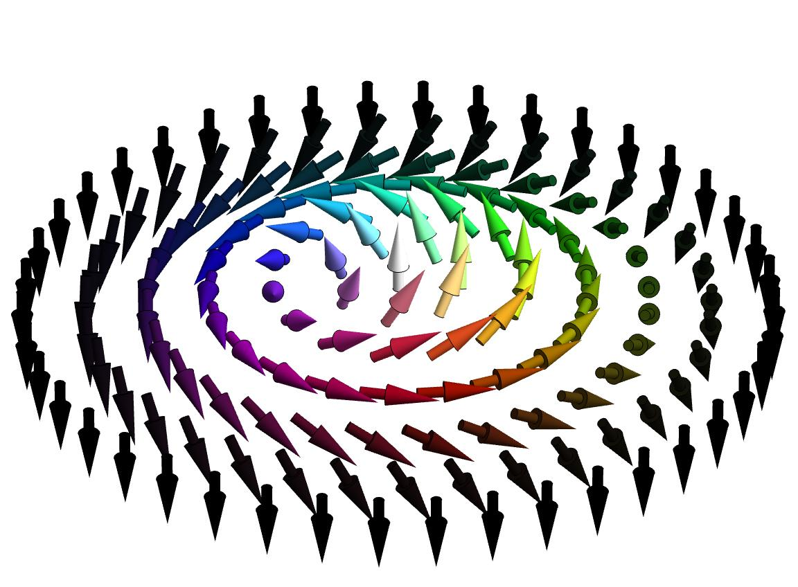
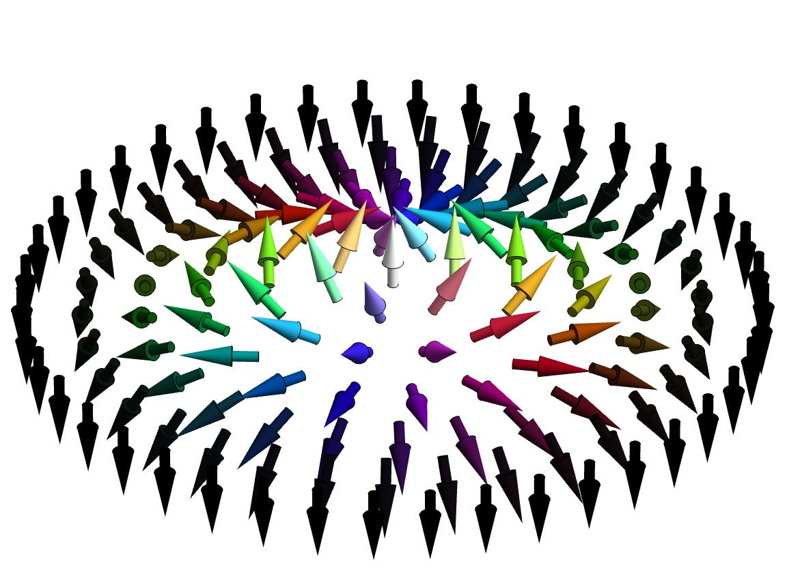
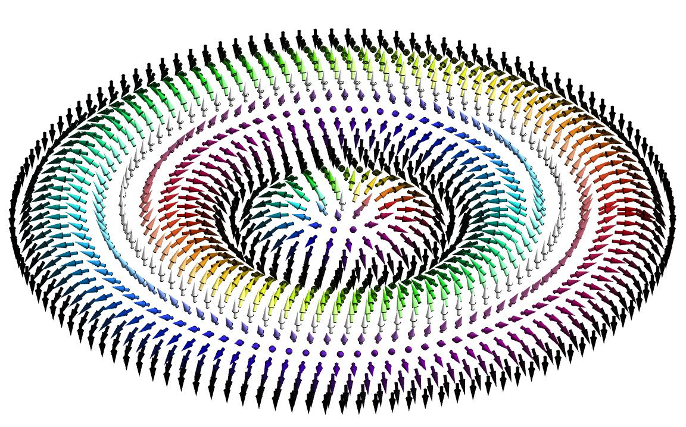
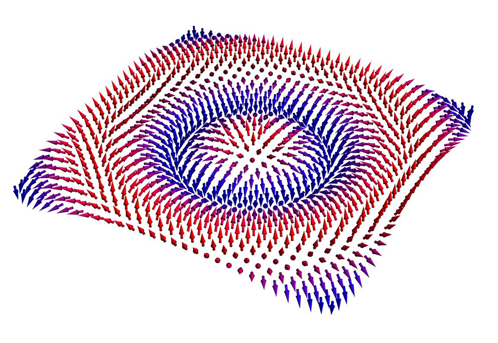

"Physics is surreal"
I am an undergrad physics student at the University of New Hampshire (UNH), USA. Before I transferred to UNH, I was at the Saitama University, Japan. I have been trying to specialize in Condensed Matter Theory but am genuinely interested in any field of theoretical physics, experimental physics, computational physics, mathematical physics, biophysics, information theory, and more.
I am applying for PhD programs this winter and am searching for the best fit for my career as a future theoretical physicist. You can find my CV here.
My hometown is Tokyo, Japan, and my first language is Japanese. I love physics, and especially enjoy discussing it with anyone around the world.

Gallery



